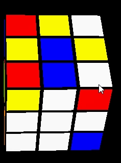
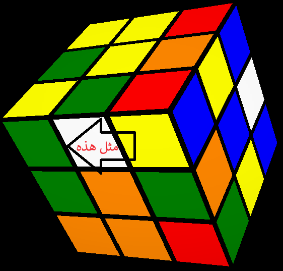
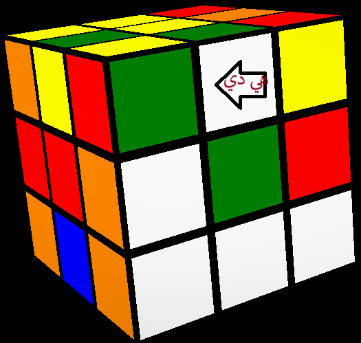
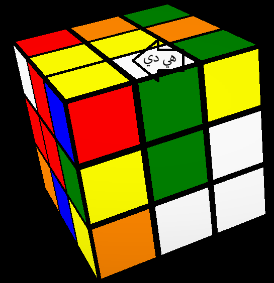
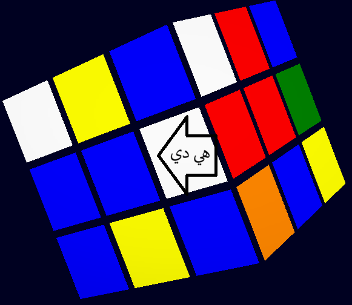

اول خطوة في تعلم حل مكعب روبيك هي ان نحضر مكعب روبيك و نركز ونتدرب يومياََ للتحسين سرعتك
_-_-_-_-_-_-_-_-_
عمل الزائد الأبيض(1)

_-_-_-_-_-_-_-_-_
اول خطوة ندور علي السنتر الابيض ثم نضع اسفل
ندور علي قطعة مجاورة بها ابيض في الطبقة العلية

لو ملقناش نعمل
U حتي نلاقي لو ملاقناش نعمل
_-_-_-_-_-_-_-_-_
لو كان فوق معكس زي

هيكون نزل تحت U' R' F R نوديه عندالسنتر بتعه ثم
_-_-_-_-_-_-_-_-_
لوكان معدول زي

نعمل F F
_-_-_-_-_-_-_-_-_
ندور في الطبق الوسطي
لو ملقناش او خلص الي فوق
وكانت في ابيض في الطبقة الوسطي نطلعه فوق بس لزم تكون علي اليمين ثم نعمل
R U R'

هتكون طلعت فوق وبعدين نعمل الخورميات التانية
_-_-_-_-_-_-_-_-_
لو مفيش في الي فوق ولا في الطبقة الوسطي وكانت تحت ومتركب غلط في الوجه الابيض
نعمل F F
_-_-_-_-_-_-_-_-_
وكدة نكون شرحنا كيفية حل الزائد الابيض
فديو توضيحي عن الذي شرح
التالي
السابق